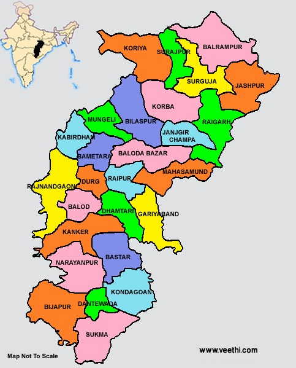

| Name: | Chhattisgarh |
|---|---|
| Capital: | Raipur |
| Language: | Hindi, Chhattisgarhi |
| Chief Minister: | Vishnu Deo Sai |
| Total Districts: | 33 |
| Population: | ~29 million (as per 2011 census) |
| Formation: | 1 November 2000 |
| Area: | 135,192 km² (9th largest in India) |
| Borders: | Madhya Pradesh, Maharashtra, Telangana, Andhra Pradesh, Odisha, Jharkhand, Uttar Pradesh |
| Coastline: | None (Landlocked State) |
Know more